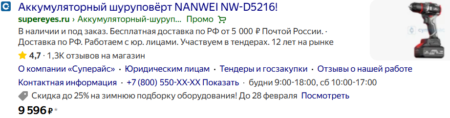
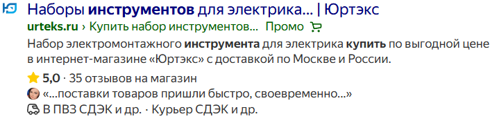
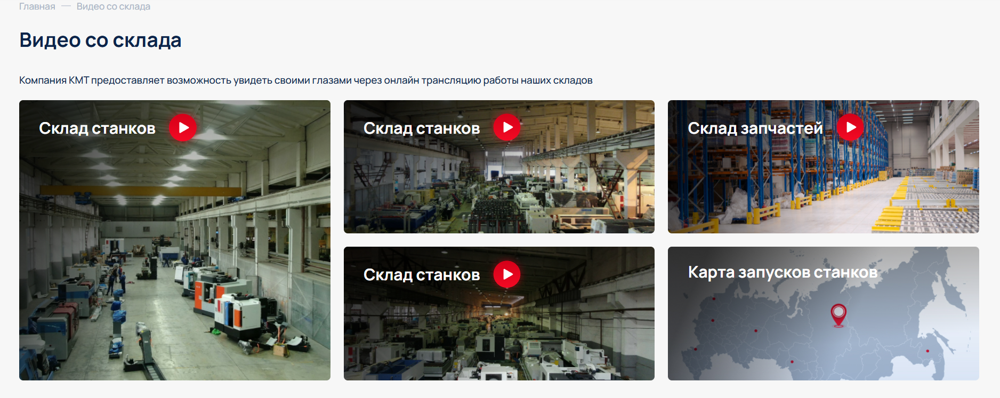
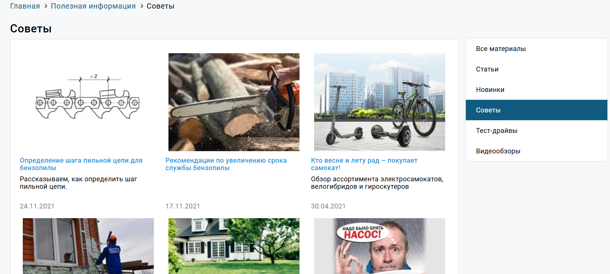
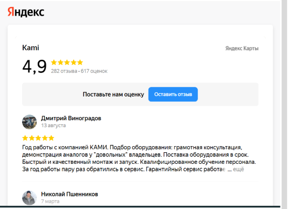
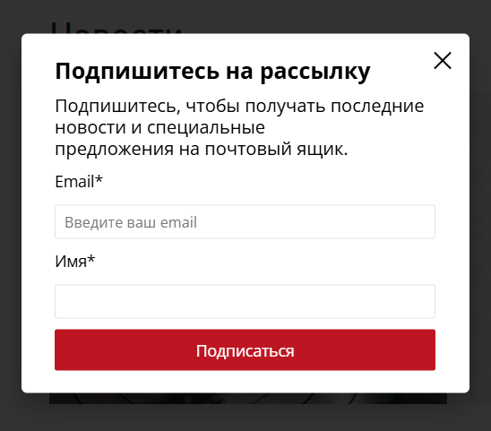

Рекомендации по улучшению поведенческих факторов для сайта electrictool.ru
В этом кейсе представлен анализ и рекомендации по улучшению поведенческих факторов (ПФ) для интернет-магазина электроинструментов electrictool.ru. Фокус на микроразметке, юзабилити и вовлечении пользователей для повышения конверсии.
1. Внедрить микроразметку для товаров
Стандартная микроразметка Schema.org + JSON-LD (золотой стандарт, дополнительно — Microdata или Open Graph для Яндекса, если нужно.) для товаров позволяет поисковым системам лучше понимать структуру каталога и выводить расширенные сниппеты в поисковой выдаче.
Что нужно сделать:
- Внедрить микроразметку для товаров (schema.org/Product)
- Указать цену, наличие, бренд и категорию
Ожидаемый результат: Увеличение CTR на 5-15% за счет расширенных сниппетов с ценами и наличием.

2. Добавить отзывы в Яндекс.Справочник
Отзывы в Яндекс.Справочнике напрямую влияют на доверие пользователей и отображаются прямо в поисковой выдаче.
Что нужно сделать:
- Добавить отзывы о магазине в Яндекс.Справочник
- Вывести рейтинг в сниппете в виде звёзд (★★★★★ 4.8 (124 отзыва))
Ожидаемый результат: Повышение доверия и кликабельности сниппета в Яндексе на 10-25%.

3. Использовать эмодзи в теге description
Эмодзи привлекают внимание в однообразной текстовой выдаче поисковиков, выделяя ваш сайт среди конкурентов.
Что нужно сделать:
- Использовать эмодзи в теге description для главных и посадочных страниц
- Пример: Купить электроинструменты в Москве. ✅ Официальная гарантия, быстрая доставка, сервисный центр. Цены от производителей!
Ожидаемый результат: Увеличение CTR на 3-8% за счет визуального выделения сниппета.

4. Добавить интерактивные элементы
Интерактивный контент удерживает внимание пользователей и увеличивает время на сайте.
Что нужно сделать:
- Добавить видеообзоры компании и портфолио
- Разместить отзывы клиентов с фото/видео
- Показать процесс работ, обзор товара
Ожидаемый результат: Увеличение вовлечённости и времени на сайте на 20-40%, снижение процента отказов на 5-10%.

5. Дополнить страницы качественным контентом
Глубокий полезный контент решает проблемы пользователей и повышает экспертный вес сайта.
Что нужно сделать:
- Создать подробные описания товаров с характеристиками
- Добавить инструкции по использованию
- Разместить статьи-советы по выбору инструментов
Ожидаемый результат: Повышение ценности страниц для пользователей, уменьшение процента отказов на 8-12%.

6. Добавить виджеты с отзывами
Социальное доказательство — мощный инструмент для увеличения доверия.
Что нужно сделать:
- Добавить на сайт виджеты с отзывами из Яндекс.Карт
- Интегрировать отзывы из Google Maps
- Подключить отзывы из социальных сетей
Ожидаемый результат: Повышение социального доказательства и доверия, снижение процента отказов на 7-15%.

7. Внедрить email-рассылку
Email-маркетинг помогает вернуть уходящих пользователей и поддерживать лояльность.
Что нужно сделать:
- Настроить подписку на новости и акции
- Реализовать напоминания о брошенной корзине
- Отправлять персонализированные рекомендации
Ожидаемый результат: Увеличение возврата пользователей на 15-30%, снижение общего процента отказов на 10-20%.

8. Создать полезную страницу 404
Качественная страница 404 превращает потерю пользователя в возможность.
Что нужно сделать:
- Создать полезную страницу 404 с поиском
- Добавить ссылки на основные разделы
- Предложить альтернативные пути
Ожидаемый результат: Уменьшение потери пользователей, попавших на несуществующую страницу, на 40-60%.

Общий вывод
Комплексная работа над поведенческими факторами сайта electrictool.ru может значительно улучшить пользовательский опыт и повысить конверсию. Наиболее приоритетными являются внедрение микроразметки для товаров и добавление отзывов в Яндекс.Справочник. Реализация всех рекомендаций позволит не только улучшить позиции в поиске, но и повысить доверие целевой аудитории.